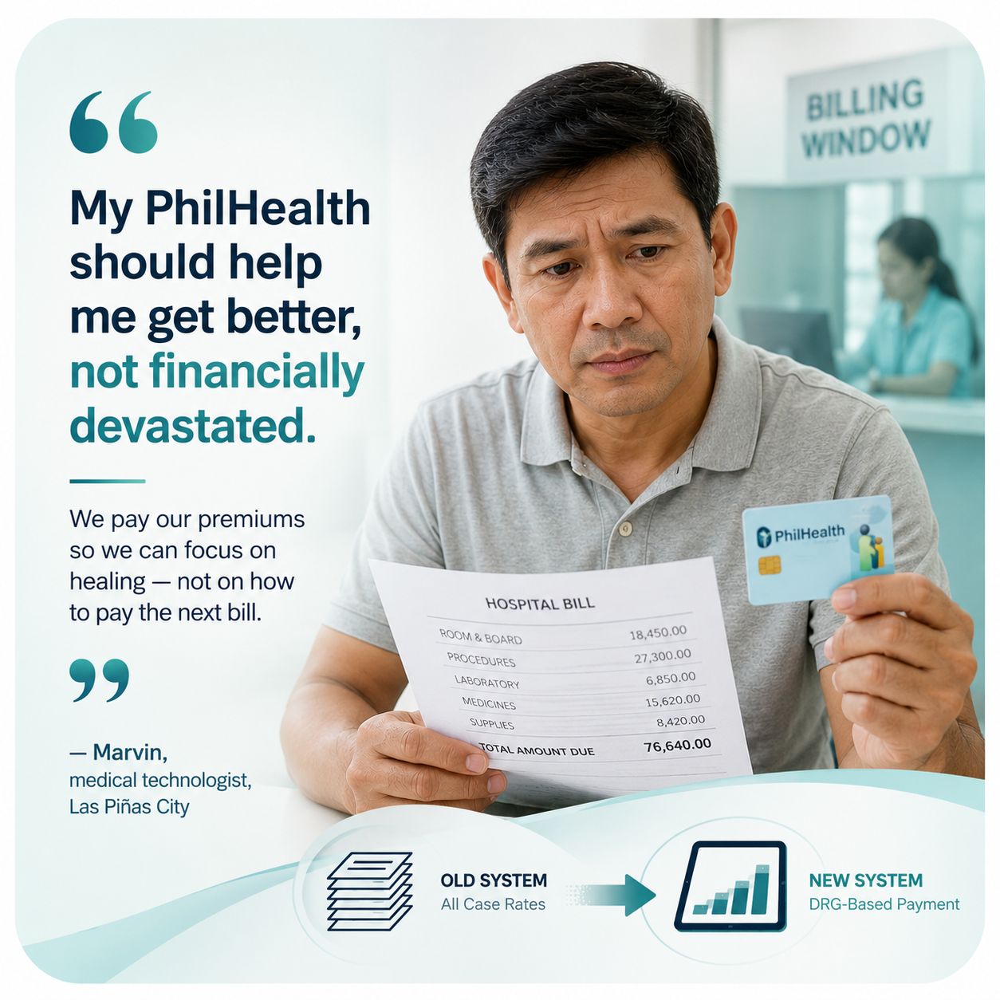
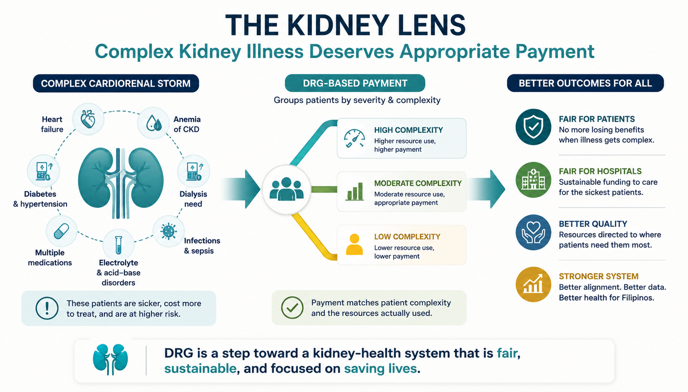

PhilHealth is replacing the way it pays hospitals. For more than a decade, almost every admission has been reimbursed at a single flat amount — the All Case Rate (ACR). By 2027, that system is being retired in favor of Diagnosis-Related Groups (DRG), a casemix-adjusted model that pays hospitals more for sicker patients. As a practicing internist-nephrologist who lives with these reimbursement rules every day, this guide explains what's changing, why the direction is right, and where the reform can quietly fail Filipino patients if hospitals and physicians don't take clinical coding seriously. Pinapalitan ng PhilHealth ang paraan ng pagbabayad nito sa mga ospital. Sa loob ng mahigit isang dekada, halos lahat ng admission ay binabayaran sa iisang flat na halaga — ang All Case Rate (ACR). Sa 2027, papalitan na ito ng Diagnosis-Related Groups (DRG), isang casemix-adjusted na modelo na mas mataas ang bayad para sa mas malulubhang pasyente. Gipulihan sa PhilHealth ang paagi sa pagbayad niini sa mga ospital. Sulod sa kapin sa usa ka dekada, halos tanang admission gibayran sa usa lang ka flat nga kantidad — ang All Case Rate (ACR). Sa 2027, pulihan na kini sa Diagnosis-Related Groups (DRG), usa ka casemix-adjusted nga modelo nga mas dako ang bayad para sa mas grabe nga mga pasyente. Tatakapan ning PhilHealth ing paraan ning pamagbayad na karing pisamban. King lub ning labis isang dekada, halos ngan a admission babayaran king metung a flat a halaga — ing All Case Rate (ACR). King 2027, takpan ne ning Diagnosis-Related Groups (DRG), metung a casemix-adjusted a modelo a mas mataas ing bayad para karing mas malubhang pasyente.
A Flat Rate That Ignores How Sick the Patient Was Isang Flat na Bayad na Hindi Pinapansin Kung Gaano Kalubha ang Pasyente Usa ka Flat nga Bayad nga Wala Magtagad Kon Unsa Kalubha ang Pasyente Metung a Flat a Bayad a Ali Patatagad Nung Makananung Kalubha ing Pasyente
For years, PhilHealth has mostly paid through All Case Rates (ACR): a fixed peso amount attached to a diagnosis or procedure. Pneumonia pays X. A cesarean pays Y. The amount is the same whether the patient sails through or nearly dies in the ICU.
That "one-rate-fits-all" design has a fatal flaw — it ignores severity. Two patients with the same diagnosis can consume wildly different resources. The government's own think tank, the Philippine Institute for Development Studies (PIDS), found the case rates so outdated that roughly 98.8% of claims exceed what PhilHealth reimburses. When the fixed rate falls short, the gap doesn't vanish — it lands on the patient as balance billing, or it quietly pressures hospitals to cut corners.
Clinical lens
This is why your "covered" admission still produced a big bill. The case rate paid a flat amount; your actual care — a sicker course, more days, more drugs — cost more. ACR has no way to say "this patient was sicker, so pay more."

The structural problem in one chart: the flat ACR amount sits below the real cost curve for moderate and severe disease — and the gap is paid by patients as balance billing.
Severity-Adjusted Bundles, Not One Rate Per Diagnosis Mga Bundle na Inaayon sa Lubha, Hindi Isang Bayad Bawat Diagnosis Mga Bundle nga Gi-adjust sa Kalubha, Dili Usa ka Bayad Matag Diagnosis Mga Bundle a Pi-aayun king Kalubha, Ali Metung a Bayad Kada Diagnosis
A Diagnosis-Related Group (DRG) system still bundles payment per episode, but it sorts cases into groups by clinical similarity and resource use — adjusting for severity, complications, and comorbidities. Instead of one flat rate per diagnosis, a stroke with major complications and a stroke without them fall into different, differently-priced groups. The payment is meant to track how sick the patient actually was.
PhilHealth is building a Philippine DRG "grouper" adapted from Thailand's system (with support from the Thai CaseMix Centre), often paired with a Global Budget to keep total spending predictable. Full rollout is targeted for around 2027, with data analysis and pilot testing in ready hospitals through late 2026, and the model applied first to selected conditions.
| Feature | All Case Rates (now) | DRG (proposed) |
|---|---|---|
| Payment basis | Fixed amount per diagnosis / procedure | Group by diagnosis + severity + comorbidities |
| Severity adjustment | None | Built in |
| Complex cases | Chronically underpaid | Paid closer to true cost |
| Main risk | Balance billing on patients | Gaming the codes; early discharge |
| Data needed | Minimal | Complete, accurate clinical coding |
One Cardiorenal Admission — Under ACR vs Under DRG Isang Cardiorenal na Admission — Sa ilalim ng ACR vs DRG Usa ka Cardiorenal nga Admission — Ubos sa ACR vs DRG Metung a Cardiorenal a Admission — King lalam ning ACR vs DRG
Abstract arguments don't pay hospital bills. The fairest way to compare ACR and DRG is to walk through one realistic Philippine admission — the kind a nephrologist sees almost weekly — and see how each model values it.
The patient (illustrative)
65-year-old man, ESRD on maintenance hemodialysis (3 sessions/week × 3 years). Arrives in the ER with 3 days of progressive dyspnea, orthopnea, leg swelling and palpitations after missing one HD session over a typhoon weekend. Found to have pulmonary congestion, hypertension 190/110, severe anemia (Hgb 6.8 g/dL), life-threatening hyperkalemia (K 6.8 mEq/L), elevated troponin (type 2 myocardial injury), and a right lower-lobe infiltrate consistent with community-acquired pneumonia. Admitted, given emergent dialysis, IV antibiotics, IV iron, an ESA dose, cardiac monitoring, two repeat echocardiograms, and a total of 3 HD runs over a 7-day stay. Discharged home alive on adjusted regimen.
The diagnoses that drive the bill — ICD-10 codes
Under DRG, every one of the following diagnoses matters: each adds either severity weight or a comorbidity/complication marker that pushes the case into a higher-paying group. Under ACR, only the principal diagnosis is rewarded; everything else is invisible to the payor.
| ICD-10 | Diagnosis | Role in DRG grouping |
|---|---|---|
I50.43 | Acute on chronic combined systolic & diastolic heart failure | Likely principal diagnosis (cardiorenal admission) |
N18.6 | End-stage renal disease | Major comorbidity |
Z99.2 | Dependence on renal dialysis | Severity marker |
I12.0 | Hypertensive CKD with stage 5 / ESRD | Comorbidity |
E87.5 | Hyperkalemia | Major complication — drives severity tier |
D63.1 | Anemia in CKD | Comorbidity — justifies ESA + IV iron |
I21.A1 | Type 2 myocardial infarction | Major complication |
J18.9 | Pneumonia, organism unspecified | Co-existing acute illness |
I10 | Essential (primary) hypertension | Background comorbidity |
How each payment model values the same admission
The peso figures below are illustrative — they use publicly available PhilHealth case-rate magnitudes and published PIDS analyses to show the structural mismatch, not to predict any specific claim. The point is the shape, not the decimal.
![Side-by-side comparison of the same 7-day cardiorenal admission. Identical line items on both sides — Room & Board ₱21,000, Labs & Meds & Supplies ₱22,500, Nephrology Care ₱6,000, Consults ₱7,000, Imaging & Procedures ₱8,000, Other ₱5,500 — for a total bill of ₱70,000. Under ACR, PhilHealth pays the Conservative Management case rate of ₱35,000 and the family is balance-billed ₱35,000. Under DRG, the case groups into Heart Failure with CKD (With CC), PhilHealth pays ₱66,390, and the family is billed only about ₱3,610.](../images/philhealth-acr-to-drg-case-comparison.webp)
Same patient, same care, two payment systems. The hospital bill (₱70,000) does not change between the two columns — only what PhilHealth pays does. Under the old All Case Rates system, the family carries a ₱35,000 balance bill. Under a severity-adjusted DRG bundle, the patient's out-of-pocket cost collapses to roughly ₱3,610.
Why this gap exists today
ACR rewards the single principal diagnosis. A flat "Conservative Management (Major Cases)" rate of about ₱35,000 was set when the average admission was a generic ward case — not an ESRD patient in cardiorenal crisis with severe anemia, hyperkalemia, type 2 MI, and pneumonia. The eight extra ICD-10 codes that describe what actually happened never reach the payor. Under DRG, every one of them is read by the grouper, the case lands in a far higher casemix bundle ("Heart Failure with CKD, With CC"), and the hospital is paid for what it actually delivered — so the family is not the one closing the gap.
DRG Is Only as Honest as Your Discharge Summary Ang DRG ay Kasing-Tapat lang ng Inyong Discharge Summary Ang DRG Sama lang ka Tinuod sa Inyong Discharge Summary Ing DRG Kasing-Tapat mu na ning Kekong Discharge Summary
This is the part of the reform Filipino clinicians and hospitals don't yet take seriously enough — and it is the single biggest reason DRG can quietly fail patients. A DRG grouper reads only what is written and coded. If a CKD admission's discharge summary says "heart failure, ESRD" and stops there, the algorithm cannot see the hyperkalemia, the anemia, the pneumonia, the type 2 MI, or the cardiorenal severity. The same patient — same beds, same medicines, same staff hours — drops into a much lower casemix group, and the hospital is paid as if the case were straightforward.
This is not about gaming the system. It is about honest severity capture. The case above is real-world common — every nephrologist sees it — and yet it is consistently under-coded in many Philippine hospitals because of three local realities:
- Coder shortage. Most provincial and many private hospitals have one or two clinical coders for hundreds of monthly discharges. Severity-rich admissions get truncated to a principal-diagnosis line.
- Physician documentation culture. Discharge summaries are written for clinical handover, not for the payor. Comorbidities that "everyone knows" — ESRD, anemia in CKD, dialysis dependence — are often omitted because they feel redundant.
- No structured feedback loop. A hospital rarely learns which DRG group its cases fell into, so there is no learning signal to improve future coding.
What every Filipino physician should do before 2027
- Read the ICD-10 short list relevant to your specialty and learn to code your own admissions — at minimum the principal diagnosis plus every comorbidity and complication that affected care.
- Write discharge summaries that earn the codes. A diagnosis not documented cannot be coded; a code not justified by documentation will be audited out.
- Audit a sample of your own cases against what was claimed. If your hospital does not surface this, request it.
- Invest in clinical coders. Hospitals that train and retain coders will be paid fairly under DRG. Hospitals that don't, won't — and the gap will land back on patients as balance billing.
For nephrologists specifically
If your CKD / ESRD / dialysis admissions only ever code as "N18.6" plus the principal acute diagnosis, you are leaving the severity of cardiorenal physiology invisible to the payor. The list of codes a routine ESRD admission can legitimately carry — E87.5 hyperkalemia, D63.1 anemia in CKD, I12.0 hypertensive CKD with ESRD, I50.43 acute-on-chronic HF, Z99.2 dialysis dependence — is long, and every entry is a real fact about the patient's stay. Document and code them.
How DRG Can Genuinely Help Patients Paano Talagang Makakatulong ang DRG sa mga Pasyente Unsaon Gyud Pagtabang sa mga Pasyente ang DRG Makananung Talagang Mákasaup ing DRG karing Pasyente
- Lower out-of-pocket costs. If payments better match real costs, hospitals have less reason to balance-bill the difference to you.
- Fairness for the sickest. Severity adjustment finally rewards hospitals for taking on complicated, high-risk patients instead of penalizing them — the patients who need the system most.
- Transparency and accountability. Casemix data lets PhilHealth see what it is actually buying, benchmark hospitals, and update rates on evidence rather than inertia.
On balance, I support the direction. ACR is physiologically naive — it treats a diagnosis as a fixed object when medicine is about trajectories and severity. DRG at least speaks the language clinicians live in: this patient was sicker, and that should count.
My position in one line
PhilHealth is right to retire All Case Rates. DRG — done well — can lower what families pay and reward hospitals for caring for the sickest among us.
Good Intentions Don't Survive Contact with Weak Systems Ang Magagandang Hangarin ay Hindi Nakaliligtas sa Mahinang Sistema Ang Maayong Tinguha Dili Mabuhi sa Huyang nga Sistema Reng Mayap a Hangad Ali la Mákaligtas king Maluga a Sistema
My concerns are practical, not ideological.
| Risk under DRG | Why it matters to patients | What must be in place |
|---|---|---|
| Upcoding & unbundling | Hospitals exaggerate or split codes to bill more; trust erodes | Audit, documentation review, penalties |
| Early discharge / dumping | A fixed price can reward sending sick patients home too soon | Readmission & outcome monitoring |
| Data not ready | ~10% of recent claims couldn't even be grouped due to poor coding | Invest in health information systems & coder training |
| Under-resourced hospitals | Provincial hospitals may lack IT and coders to comply | Capacity-building before rollout |
| Won't fix eligibility gaps | DRG changes how, not whether, you're covered | Fix the 24-hour rule & enforcement in parallel |
Why a Nephrologist Watches This Closely Bakit Mabuting Pinapanood ng Isang Nephrologist Ito Nganong Maayong Gitan-aw sa Usa ka Nephrologist Kini Bakit Mayap a Bantayan ning Metung a Nephrologist Iti
Few specialties feel payment design as acutely as nephrology, because kidney disease is rarely one problem. A single admission for chronic kidney disease may braid together fluid overload, dangerous potassium levels, acidosis, anemia, infection, and a strained heart — the cardiorenal reality of these patients. Under ACR, that whole storm can be reimbursed as one flat "CKD" or dialysis package, regardless of how close the patient came to dying.
A well-built DRG should recognize that a hyperkalemic, fluid-overloaded patient in cardiorenal crisis is not the same case as a stable patient admitted for a routine tune-up — and pay accordingly. That is good for patients with severe disease. But the same fixed-group logic could, if guardrails are weak, nudge hospitals to discharge a fragile dialysis patient a day too early, or to shy away from the most complex transplant and cardiorenal cases. For a population that already faces high out-of-pocket costs and treatment dropout, those incentives must be watched carefully.

A CKD admission is rarely one problem. The figure shows how the same severity-rich storm forks into two very different outcomes under DRG: paid for the severity (the green "well-built" path) or pressured into early discharge and case avoidance (the amber "weak design" path).
Bottom line for kidney patients
Severity-adjusted payment is, in principle, good news for complex renal care — but only if it is paired with outcome tracking, so that "efficiency" never becomes a reason to under-treat the sickest kidneys.
For DRG to Actually Protect Patients Para Talagang Maprotektahan ng DRG ang mga Pasyente Aron Tinuod nga Mapanalipdan sa DRG ang mga Pasyente Bang Talagang Mapaningnan ning DRG Reng Pasyente
- Invest in clinical coding and health information systems before scaling — the model is only as honest as the data feeding it.
- Stand up real audit and anti-fraud capacity to catch upcoding and unbundling early.
- Tie payment to outcomes and readmissions, so early discharge is penalized, not rewarded.
- Use the Global Budget to protect total funding while phasing in by condition, with transparent rate-setting.
- Train Filipino physicians and clinical coders to ICD-10 standards as core continuing-education content — the documentation discipline that protects patients under DRG is taught, not assumed.
Two Audiences, Two Practical Lists Before 2027 Dalawang Audience, Dalawang Praktikal na Listahan Bago ang 2027 Duha ka Audience, Duha ka Praktikal nga Listahan Sa wala pa ang 2027 Aduang Audience, Aduang Praktikal a Listahan Bayu ing 2027
If you are a patient or family caregiver
- Ask for an itemised bill — with the diagnosis and procedure codes. Every hospital is required to give you one. Under DRG, the codes are what determine your bundle. You have a right to know which ones were submitted.
- When a hospital says "PhilHealth only pays X," ask which codes were claimed. A severity-rich admission billed as a simple principal diagnosis will reimburse less than it should — that gap usually lands on you.
- Keep every record. ER notes, admission times, discharge summaries, and receipts are what let you contest a mismatched claim later.
- Expect that a sicker admission, under DRG, should generate a larger PhilHealth payout — not a larger out-of-pocket bill. If it doesn't, the case was almost certainly under-coded.
If you are a physician, resident, or hospital administrator
- Learn to code your own admissions to ICD-10 standards. At minimum: the principal diagnosis, every comorbidity that affected care, every complication that occurred, and every procedure performed.
- Write discharge summaries that earn the codes. If hyperkalemia, anemia, type 2 MI, or dialysis dependence affected the stay, document them explicitly. A code without supporting documentation will be audited out.
- Audit a sample of your own discharges against what was claimed. If your hospital does not show you this feedback loop, ask for it. The PIDS analyses suggest about 1 in 10 recent claims could not even be grouped because the data weren't there.
- Build in-house clinical coding capacity now. Hospitals that train and retain dedicated ICD-10 coders will be paid fairly under DRG. Those that don't will quietly under-collect — and the gap will reappear as balance bills on Filipino families.
One-line take-home
Under DRG, every diagnosis you document is paid for; every diagnosis you omit is invisible. Filipino clinicians who treat the discharge summary as a payor-facing document — not just a clinical handover — protect their patients from the next era's version of balance billing.
The Right Engine — But Coding Is the Fuel Ang Tamang Makina — Ngunit ang Coding ang Gasolina Ang Sakto nga Makina — Apan ang Coding mao ang Gasolina Ing Tamang Makina — Pero ing Coding ya ing Gasolina
PhilHealth is right to retire All Case Rates. A flat fee that ignores how sick the patient was is bad medicine and bad economics, and DRG — done well — can lower what Filipino families pay and reward hospitals for caring for the sickest among us. I support the move.
But DRG is only as fair as its data. If hospitals and Filipino nephrologists don't take coding and documentation seriously — investing in coders, training residents, auditing their own discharge summaries — patients with complex disease will still face mismatched payments and balance bills, just under a new name. The reform is the right engine; honest clinical coding is the fuel.
A note on this guide
This guide reflects my professional opinion as an internist-nephrologist and is for education, not legal or financial advice. The peso figures in the worked case are illustrative — PhilHealth case rates and DRG groupings will be set by official issuances during the rollout. Always confirm current coverage and tariffs directly with PhilHealth.